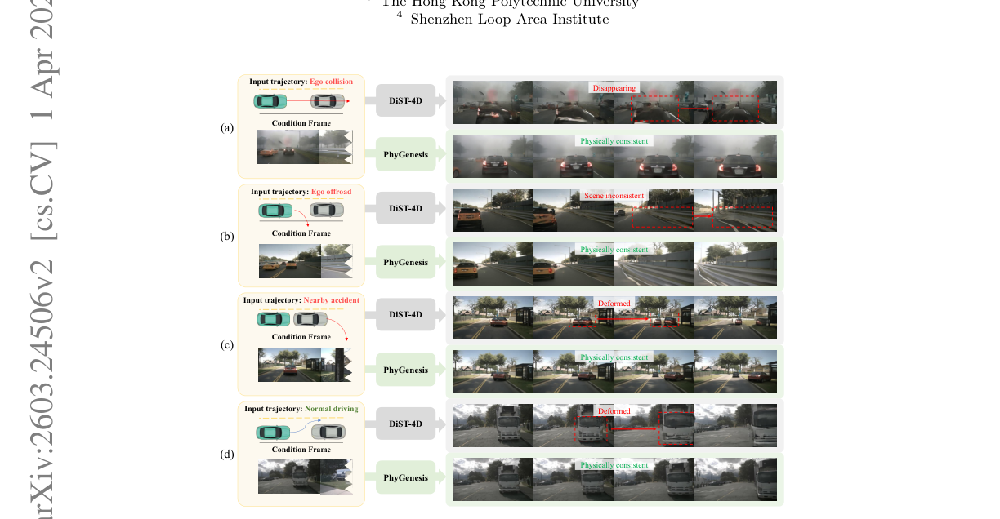
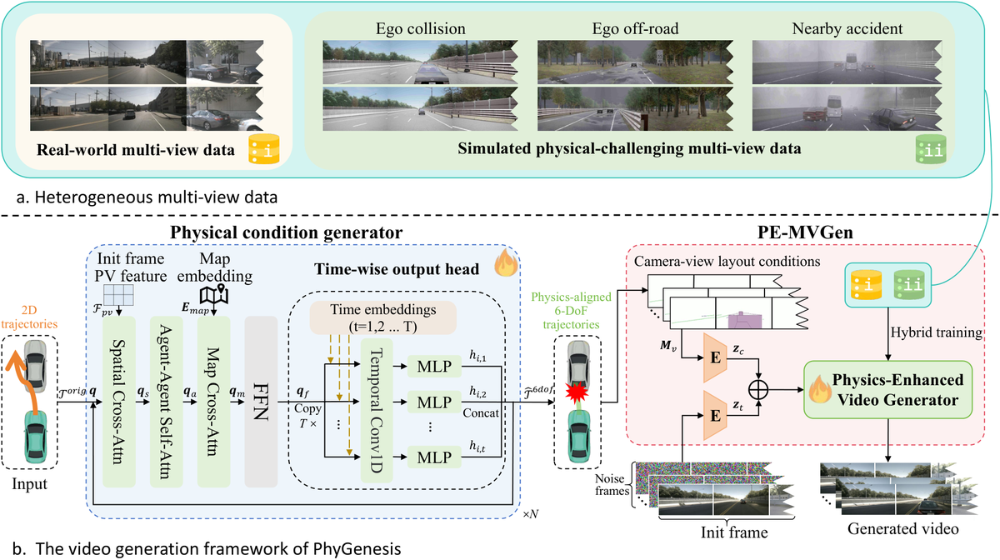
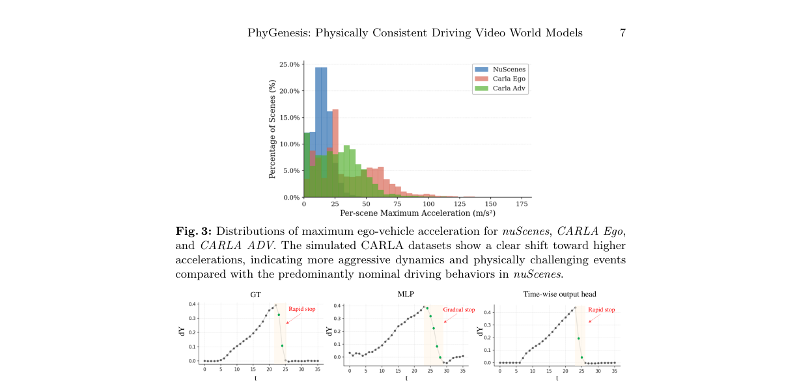
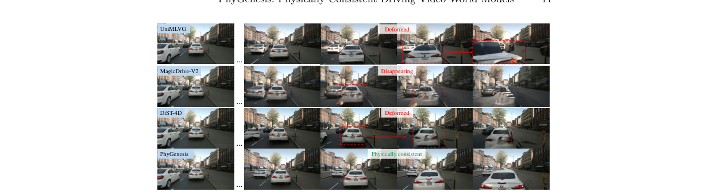
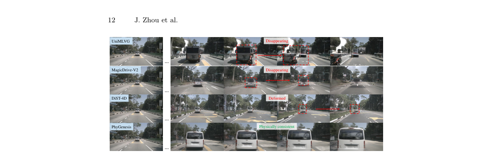
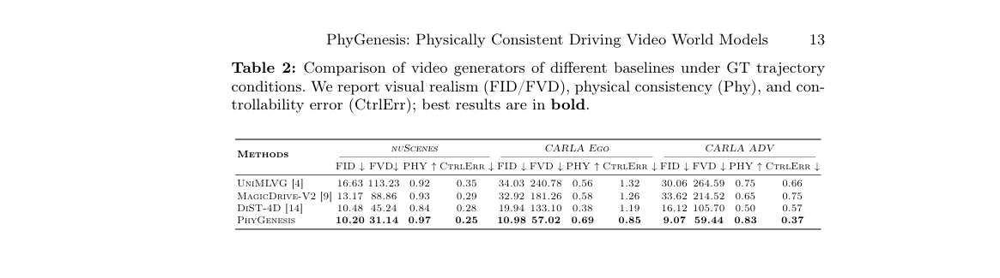
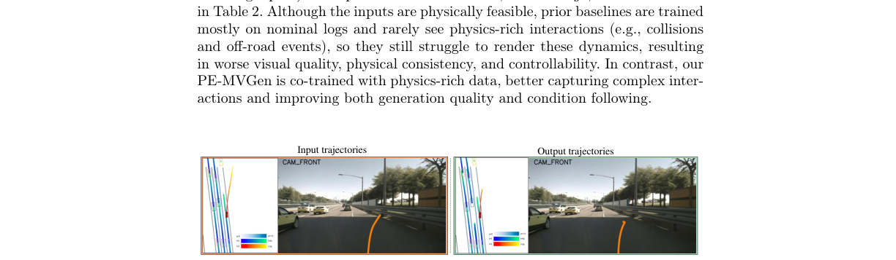

Toward
简单摘要
视频生成模型作为自动驾驶模拟的世界模型已显示出强大的潜力。然而，现有的方法主要是在现实世界的驾驶数据集上进行训练，这些数据集大多包含自然和安全的驾驶场景。因此，当前的模型在遇到具有挑战性或反事实的轨迹（例如模拟器或规划系统生成的不完美轨迹）时常常会失败，从而产生具有严重物理不一致和伪影的视频。为了解决这一限制，我们提出了 PhyGenesis，这是一种世界模型，旨在生成具有高视觉保真度和强物理一致性的驾驶视频。
我们的框架由两个关键组件组成：(1) 物理条件生成器，将潜在无效的轨迹输入转换为物理上合理的条件；(2) 物理增强视频生成器，在这些条件下生成高保真多视图驾驶视频。为了有效地训练这些组件，我们构建了一个大规模的、物理丰富的异构数据集。具体来说，除了真实世界的驾驶视频外，我们还使用 CARLA 模拟器生成各种具有挑战性的驾驶场景，从中导出监督信号，指导模型学习极端条件下的物理接地动力学。这种具有挑战性的轨迹学习策略可以实现轨迹校正并促进物理一致的视频生成。
大量实验表明，PhyGenesis 始终优于最先进的方法，尤其是在具有挑战性的轨迹上。我们的项目页面位于：https://wm-research.github.io/PhyGenesis/https://wm-research.github.io/PhyGenesis/。自动驾驶 世界模型 视频生成


简而言之，这篇论文关注的核心是：视频生成模型作为自动驾驶模拟的世界模型已显示出强大的潜力。然而，现有的方法主要是在现实世界的驾驶数据集上进行训练，这些数据集大多包含自然和安全的驾驶场景。因此，当前的模型在遇到具有挑战性或反事实的轨迹（例如模拟器或规划系统生成的不完美轨迹）时常常会失败，从而产生具有严重物理不一致和伪影的视频。为了…
视频世界模型最近已成为自动驾驶研究的中心范例，为昂贵的现实世界数据收集和高保真物理模拟器提供了可扩展的替代方案。最近的驾驶世界模型可以合成高保真多视图未来场景，同时通过车辆轨迹等结构化条件保持可控性。这些功能支持了各种下游应用，包括仿真中的闭环评估、高风险场景综合以及与端到端规划器集成以进行决策和运动预测。尽管取得了这些进步，当前的驾驶世界模型在轨迹模拟器、规划系统或用户交互产生的具有挑战性的轨迹条件下部署时仍会遇到困难。
我们确定了现有方法的两个基本局限性。首先，当前模型缺乏对轨迹可行性的物理认识。模拟器或规划器生成的轨迹条件可能不完美，并且可能违反基本的物理约束。然而，现有模型缺乏明确的物理推理，并且很大程度上充当条件到像素的转换器。当被迫遵循这种物理上不一致的输入时，他们通常会制作出具有严重渲染伪影和结构故障的视频。其次，当前模型缺乏物理一致的生成能力。大多数现有方法主要是在以安全和名义行为为主的现实世界驾驶数据集上进行训练。
因此，即使轨迹本身在物理上可行，他们也很难在碰撞或越野偏离等罕见情况下生成真实的动态。因此，先前的方法（例如 DiST-4D）经常会产生严重的伪影和物理不一致的视频，如图 1 所示。在这项工作中，我们介绍了 PhyGenesis，一种物理感知的驾驶世界模型，旨在解决这两个限制。我们的主要见解是，物理一致的世界建模需要联合处理轨迹可行性和物理一致的视频生成。为此，PhyGenesis 引入了一个名为“物理条件生成器”的新颖模块，该模块通过解决潜在的物理冲突，将任意轨迹条件转换为物理一致的条件。
然后将校正后的条件输入物理增强视频生成器，该生成器合成高保真且物理一致的多视图驾驶视频。为了支持这个学习过程，我们构建了一个异构训练数据集，它将现实世界的驾驶数据与……
核心创新
综合引言与方法部分，这篇论文的核心创新可以概括为以下几方面：
1）问题定义与研究动机
视频世界模型最近已成为自动驾驶研究的中心范例，为昂贵的现实世界数据收集和高保真物理模拟器提供了可扩展的替代方案。最近的驾驶世界模型可以合成高保真多视图未来场景，同时通过车辆轨迹等结构化条件保持可控性。这些功能支持了各种下游应用，包括仿真中的闭环评估、高风险场景综合以及与端到端规划器集成以进行决策和运动预测。尽管取得了这些进步，当前的驾驶世界模型在轨迹模拟器、规划系统或用户交互产生的具有挑战性的轨迹条件下部署时仍会遇到困难。我们确定了现有方法的两个基本局限性。首先，当前模型缺乏对轨迹可行性的物理认识。模拟器或规划器生成的轨迹条件可能不完美，并且可能违反基本的物理约束。然而，现有模型缺乏明确的物理推理，并且很大程度上充当条件到像素的转换器。当被迫遵循这种物理上不一致的输入时，他们通常会制作出具有严重渲染伪影和结构故障的视频。其次，当前模型缺乏物理一致的生成能力。大多数现有方法主要是在以安全和名义行为为主的现实世界驾驶数据集上进行训练。因此，即使轨迹本身在物理上可行，他们也很难在碰撞或越野偏离等罕见情况下生成真实的动态。因此，先前的方法（例如 DiST-4D）经常会产生严重的伪影和物理不一…
2）方法框架与核心模块
PhyGenesis 概述 我们的 PhyGenesis 框架的概述如图所示。如图（a）所示，我们的框架是在异构多视图数据集（第 1 节）上进行训练的，这使得模型即使在具有挑战性的场景下也能够学习高视觉保真度和物理一致性。给定轨迹输入，物理条件生成器（第 1 节）首先将潜在无效的轨迹纠正为物理一致的 6 自由度车辆运动。然后，这些校正后的条件会传递到物理增强型多视图视频生成器 (PE-MVGen)（第 1 节），该生成器会合成多视图视频序列。即使输入轨迹违反物理约束，这种统一的管道也能生成高质量的视频。具体来说，我们的系统将初始多视图图像、静态地图和所有代理（即汽车）的一组未来轨迹作为输入。我们定义、地点并指定代理在某个时间的 2D 位置。这种二维轨迹表示符合主流轨迹模拟器和端到端自动驾驶规划器的标准输出格式。至关重要的是，这些轨迹可能违反物理原理（例如，包含会导致对象穿透的重叠路径）。考虑到这种潜在的缺陷输入，我们的目标是合成一个高保真、多视图视频序列，忠实地反映预期的驾驶行为，同时遵守现实世界的物理限制。接下来，我们详细介绍设计的每个部分。异构多视图数据真实世界多视图数据。遵循最…
3）实验设计与工程价值
实验设置数据集：我们使用第 2 节中介绍的异构多视图数据集（包括 CARLA Ego、CARLA ADV 和 nuScenes）进行训练和评估。在训练过程中，我们采用平衡采样来保持模拟与真实剪辑的比例接近1:1。对于视频生成评估，我们在每个测试片段中随机采样 150 个剪辑，并为所有采样剪辑生成视频。由于比较的基线主要是在 nuScenes 上训练的，因此我们使用学习的风格转移模型（补充材料中的详细信息）将 CARLA 剪辑转换为 nuScenes 视觉风格，以进行公平评估。 1pt 评估指标：我们从三个维度评估生成的视频：视觉质量、物理合理性和可控性。 (1)：继之前的工作之后，我们使用 FID 和 FVD 来衡量真实度。 (2)：为了物理合理性，我们采用 WorldModelBench，这是一个基准，可以使用基于人类偏好的基于 VLM 的判断器来有效衡量自动驾驶视频生成的有效性。我们…
技术细节
下面按照论文的方法章节结构展开，重点说明模型的关键模块、公式设计和训练策略。
PhyGenesis 概述 我们的 PhyGenesis 框架的概述如图所示。如图（a）所示，我们的框架是在异构多视图数据集（第 1 节）上进行训练的，这使得模型即使在具有挑战性的场景下也能够学习高视觉保真度和物理一致性。给定轨迹输入，物理条件生成器（第 1 节）首先将潜在无效的轨迹纠正为物理一致的 6 自由度车辆运动。然后，这些校正后的条件会传递到物理增强型多视图视频生成器 (PE-MVGen)（第 1 节），该生成器会合成多视图视频序列。即使输入轨迹违反物理约束，这种统一的管道也能生成高质量的视频。具体来说，我们的系统将初始多视图图像、静态地图和所有代理（即汽车）的一组未来轨迹作为输入。我们定义、地点并指定代理在某个时间的 2D 位置。这种二维轨迹表示符合主流轨迹模拟器和端到端自动驾驶规划器的标准输出格式。至关重要的是，这些轨迹可能违反物理原理（例如，包含会导致对象穿透的重叠路径）。考虑到这种潜在的缺陷输入，我们的目标是合成一个高保真、多视图视频序列，忠实地反映预期的驾驶行为，同时遵守现实世界的物理限制。接下来，我们详细介绍设计的每个部分。异构多视图数据真实世界多视图数据。遵循最近的多视图驾驶世界模型，我们利用 nuScenes 数据集中的名义现实世界驾驶日志来建立对复杂城市环境的基础理解。然而，这些数据严重偏向于安全驾驶行为，并且本质上缺乏复杂的物理交互（碰撞、越野驾驶）。这种数据缺乏导致生成模型在具有物理挑战性的轨迹下产生伪影和物理不一致的运动。 1pt 模拟具有物理挑战性的多视图数据。为了使世界模型具有强大的物理理解能力以及在具有物理挑战性的交互下生成视频的能力，明确包含此类事件的训练数据至关重要。由于收集安全关键的现实世界数据是不切实际的，现代驾驶模拟器（例如 CARLA）提供高保真物理引擎和可控的环境变化。
ReSim 等之前的工作尝试将合成数据纳入世界模型训练中，以减轻现实世界分布的有限覆盖范围。他们的合成数据仅限于只有自我轨迹注释的单一视图，这使得训练控制多个代理的模型变得困难。此外，他们的数据收集并没有明确关注物理挑战事件，为加强模型的物理先验提供了有限的监督。为了填补这一空白，我们利用 CARLA 模拟器构建了一个大规模的多视图合成数据集，重点关注具有物理挑战性的场景。我们遵循 Bench2Drive 路由设置来覆盖不同的场景，...
$$ \mathbf{q}_{s} = \text{SpatialCrossAttn}(\mathbf{q}, \mathcal{F}_{pv}) $$
公式：\mathbf{q}_{s} = \text{SpatialCrossAttn}(\mathbf{q}, \mathcal{F}_{pv}) 上下：R^N D N D F_pv q_s: 随后，引入了智能体-智能体自注意力层，使令牌能够感知周围车辆的位置和运动状态，这是解决重叠和穿透冲突的关键设计：此外，地图交叉注意力层集成了向量化 m…
$$ \mathbf{q}_{a} = \text{AgentSelfAttn}(\mathbf{q}_{s}) $$
公式：\mathbf{q}_{a} = \text{AgentSelfAttn}(\mathbf{q}_{s}) 上下文：内茨.此操作产生基于空间的查询：随后，引入代理-代理自注意力层，使令牌能够感知周围车辆的位置和运动状态，这是解决重叠和渗透冲突的关键设计：此外，地图cro…
$$ \mathbf{q}_{m} = \text{MapCrossAttn}(\mathbf{q}_{a}, \mathbf{E}_{map}) $$
公式：\mathbf{q}_{m} = \text{MapCrossAttn}(\mathbf{q}_{a}, \mathbf{E}_{map}) 上下：引入-attention层，使token能够感知周围车辆的位置和运动状态，这是解决重叠和穿透冲突的关键设计：此外，地图交叉注意力层集成了矢量化地图嵌入，以实现更好的越野感知：最后，...
$$ \mathbf{q}_{f} = \text{FFN}(\mathbf{q}_{m}) $$
公式：\mathbf{q}_{f} = \text{FFN}(\mathbf{q}_{m}) 上下文：quation 此外，地图交叉注意力层集成了矢量化地图嵌入，以实现更好的越野意识：最后，应用前馈网络对聚合特征进行非线性转换，在轨迹预测之前产生完全细化的查询：在上述各层之后，细化的查询…
$$ \mathbf{h}_{i,t} = \text{TCN} \left( \text{Proj}(\mathbf{q}_f[i] \parallel \mathbf{E}_{time}(t)) \right) $$
公式：\mathbf{h}_{i,t} = \text{TCN} \left( \text{Proj}(\mathbf{q}_f[i] \parallel \mathbf{E}_{time}(t)) \right) 上下文：作为最终的预测模块。对于第 -th 精炼代理令牌，我们将其扩展到未来的步骤，并将其与特定于步骤的可学习时间嵌入连接起来。然后，连接的特征由时间卷积网络（TCN）进行处理，以捕获局部步间动态变化，然后……
$$ \hat{\mathcal{T}}_{i,t}^{6dof} = \text{MLP}(\mathbf{h}_{i,t}) \in \mathbb{R}^6 $$
公式：\hat{\mathcal{T}}_{i,t}^{6dof} = \text{MLP}(\mathbf{h}_{i,t}) \in \mathbb{R}^6 上下文：使用特定于步骤的可学习时间嵌入来实现它。然后，连接的特征由时间卷积网络 (TCN) 处理，以捕获局部步间动态变化，然后由 MLP 投影以输出精确的 6-DoF 状态：如图所示，与标准回归头不同，它支持…


把全文方法串起来看，这篇论文的逻辑基本都遵循同一条主线：先把输入组织成更容易处理的表示，再通过模型结构和损失函数把这个表示推向目标输出，最后用可视化与数值实验共同证明该设计有效。
实验结论
实验部分主要回答两个问题：第一，方法是否真的优于已有基线；第二，这种优势来自哪一个设计决策。
实验设置数据集：我们使用第 2 节中介绍的异构多视图数据集（包括 CARLA Ego、CARLA ADV 和 nuScenes）进行训练和评估。在训练过程中，我们采用平衡采样来保持模拟与真实剪辑的比例接近1:1。对于视频生成评估，我们在每个测试片段中随机采样 150 个剪辑，并为所有采样剪辑生成视频。由于比较的基线主要是在 nuScenes 上训练的，因此我们使用学习的风格转移模型（补充材料中的详细信息）将 CARLA 剪辑转换为 nuScenes 视觉风格，以进行公平评估。 1pt 评估指标：我们从三个维度评估生成的视频：视觉质量、物理合理性和可控性。 (1)：继之前的工作之后，我们使用 FID 和 FVD 来衡量真实度。 (2)：为了物理合理性，我们采用 WorldModelBench，这是一个基准，可以使用基于人类偏好的基于 VLM 的判断器来有效衡量自动驾驶视频生成的有效性。我们将 PHY 报告为四个 WorldModelBench 指标的平均值：质量（对象不会不规则变形）、不可穿透性（对象不会不自然地相互穿过）、帧质量（没有不吸引人的帧或低质量内容）和时间质量（没有时间不一致的场景和对象）。此外，我们报告了人类偏好率（Pref.），计算为成对比较的百分比，其中人类注释者更喜欢某种方法。补充材料中提供了详细的调查问卷和设置。 (3)：为了可控性，我们测量生成的视频遵循输入轨迹条件的程度。具体来说，我们根据先前的工作计算从生成的视频中提取的轨迹与地面实况轨迹之间的可控性误差（CtrlErr），定义为旋转误差和平移误差的几何平均值。使用 ViPE 提取相机姿势序列。 1pt 基线：我们将我们的方法与三个基线进行比较：UniMLVG、MagicDrive-V2 和 DiST-4D，评估它们在我们的数据集上的性能。对于 UniMLVG、MagicDrive-V2 和我们的框架，输入包括初始 RGB 帧、场景标题和未来布局信息。对于 DiST-4D，它还需要初始帧深度图以及初始 RGB 帧，以提供额外的几何线索。补充材料中提供了这些基线的实施细节。 1pt 实施细节：我们的身体状况生成器的训练使用 12Hz 数据进行。
使用 ResNet50 提取感知视图 (PV) 特征，该 ResNet50 初始化并以学习率为 进行训练。主网络的训练学习率为 ，批量大小设置为 256。我们设置...



- 方法在核心指标上的优势与结构设计和训练目标直接相关；
- 消融实验表明，拿掉关键模块后性能与结果质量都有明显回落；
- 论文不仅比较数值，也关注可视化质量、稳定性和泛化能力等更贴近真实使用的信号。
理解评价
我们推出了 PhyGenesis，一种新颖的驾驶世界模型，用于生成物理一致的高保真多视图视频。通过明确处理轨迹可行性和物理增强视频生成，我们的方法在视觉保真度和物理一致性方面都优于现有方法，特别是在具有挑战性的轨迹条件下。我们的框架能够更可靠地模拟碰撞和越野行为等安全关键事件。通过更好地将规划器或模拟器提供的轨迹条件与物理上一致的视觉世界建模相结合，PhyGenesis 为自动驾驶中的模拟驱动评估和安全测试提供了实用的构建模块。
如果把它当成研究参考，建议重点关注三件事：第一，这套方法真正依赖的归纳偏置是什么；第二，实验中真正拉开差距的模块是哪一个；第三，它的局限究竟来自数据、算力还是监督信号本身。
以下相关论文可以作为进一步追踪的入口：